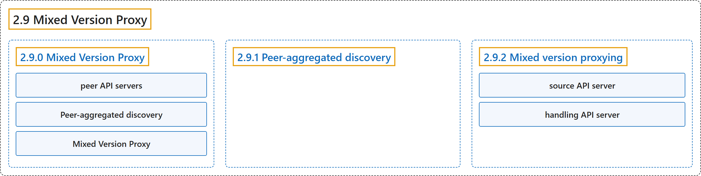

2.9 Mixed Version Proxy
Classification

Glossary
| Term | Definition | 中文翻译 | Source |
|---|---|---|---|
| 2.9 Mixed Version Proxy 混合版本代理 |
"Kubernetes 1.37 includes a beta feature that lets an API Server proxy resource requests to other peer API servers." | Kubernetes 1.37 包含一项 beta 功能，让一个 API 服务器把资源请求代理给其他对等 API 服务器。 | The Kubernetes Authors, n.d., "Mixed Version Proxy", para. 1 |
| 2.9.0 Mixed Version Proxy 混合版本代理 |
(No definition) | （无定义） | The Kubernetes Authors, n.d., "Mixed Version Proxy" |
| peer API servers 对等 API 服务器 |
(context) "Kubernetes 1.37 includes a beta feature that lets an API Server proxy resource requests to other peer API servers." | （语境）Kubernetes 1.37 包含一项 beta 功能，让一个 API 服务器把资源请求代理给其他对等 API 服务器。 | The Kubernetes Authors, n.d., "Mixed Version Proxy", para. 1 |
| Peer-aggregated discovery 对等聚合发现 |
"We call this complete cluster-wide discovery Peer-aggregated discovery." | 我们把这种完整的集群范围发现称为对等聚合发现。 | The Kubernetes Authors, n.d., "Mixed Version Proxy", para. 3 |
| Mixed Version Proxy 混合版本代理 |
(context) "This mechanism is called the Mixed Version Proxy." | （语境）这一机制称为混合版本代理。 | The Kubernetes Authors, n.d., "Mixed Version Proxy", para. 4 |
| 2.9.1 Peer-aggregated discovery 对等聚合发现 |
"When you enable the feature, discovery requests are automatically enabled to serve a comprehensive discovery document (listing all resources served by any apiserver in the cluster) by default." | 启用该功能后，发现请求会自动启用，默认提供一份完整的发现文档（列出集群中任一 API 服务器提供的全部资源）。 | The Kubernetes Authors, n.d., "Peer-aggregated discovery", para. 1 |
| 2.9.2 Mixed version proxying 混合版本代理 |
"When you enable mixed version proxying, the aggregation layer loads a special filter that does the following:" | 启用混合版本代理后，聚合层会加载一个特殊的过滤器，执行以下操作： | The Kubernetes Authors, n.d., "Mixed version proxying", para. 1 |
| source API server 源 API 服务器 |
(context) "If the peer API server fails to respond, the source API server responds with 503 ("Service Unavailable") error." | （语境）如果对等 API 服务器没有响应，由源 API 服务器返回 503（“Service Unavailable”）错误。 | The Kubernetes Authors, n.d., "Mixed version proxying", para. 3 |
| handling API server 处理请求的 API 服务器 |
"the API server trying to handle the request (the handling API server)" | 尝试处理该请求的 API 服务器（即处理请求的 API 服务器） | The Kubernetes Authors, n.d., "How it works under the hood", para. 3 |
References
The Kubernetes Authors. (n.d.). Mixed Version Proxy. Kubernetes Documentation. Retrieved October 31, 2026, from https://kubernetes.io/docs/concepts/architecture/mixed-version-proxy/